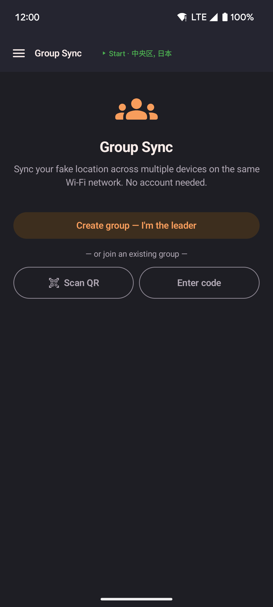

Group Sync
Share one location across multiple devices on the same Wi-Fi network. One device acts as the leader and sends out its position, and the rest follow along automatically. No account, no internet connection, and no outside server needed.

- One device creates the group and becomes the leader.
- Other devices join by scanning a QR code shown on the leader's screen, or by typing a short join code shown next to it.
- Followers walk toward the leader's location automatically over the same Wi-Fi, moving at their own current speed.
- Everything happens on the devices themselves, with no account, no cloud, and no internet needed.
How it works
- The leader opens Group Sync from the navigation drawer and taps Create group: I'm the leader.
- A QR code and a short join code appear on the leader's screen. Either one identifies the group.
- Each follower opens Group Sync on their own device, then either scans the QR code with their camera or types the join code by hand.
- The follower joins automatically. Turn on Follow leader to start mirroring the leader's location.
Leader
The leader device shares its current location with every connected follower once a second, over the local Wi-Fi network.
| Control | Description |
|---|---|
| QR code | Shows the join invite, plus the join code as text for typing in by hand. Tap the refresh icon to generate a fresh QR code without changing the join code. |
| Sharing toggle | When on, the leader actively sends its position to followers. Turn it off to pause sharing without leaving the group. |
| Leave group | Removes the device from the group. All followers lose the connection and stop getting updates. |
Follower
Each follower connects to the leader and receives its position updates. Instead of jumping straight there, the follower's location walks toward the leader's, at whatever speed (Slow Walk, Walk, Run, Bike, or Drive) is currently set on that device. If the follower starts far away, it may take a while to catch up, and it may never fully catch up if the leader keeps moving. That's intentional, so the movement always looks like a real walk rather than a sudden jump.
| Control | Description |
|---|---|
| Follow leader toggle | When on, the device walks toward the leader's location as it updates. Turn it off to pause following while staying in the group. |
| Teleport to leader now | Jumps straight to the leader's last known position right away, instead of walking there. Shown while Follow leader is on. This button is also available in the floating widget's panel whenever Follow leader is on, so you don't need to open the app to use it. |
| Leave group | Disconnects from the leader and clears the saved connection details. |
Persistence
A follower's connection details are saved on the device. If Follow leader was turned on when the app last closed, following starts again automatically the next time you open the app, even after a device restart.
A leader's role is saved the same way — the group starts back up automatically the next time the app opens, including after a device restart, without needing to tap Create group again.
Requirements
- All devices must be on the same Wi-Fi network.
- Mock location must be turned on separately on each device. A follower spoofs its own location using the position it receives.
- No extra permissions are needed beyond what the app already asks for.
Limitations
- Mobile data or a VPN can prevent a device from reaching the leader's local address.
- If the leader's network address changes, for example after its own app restarts, followers try to reconnect automatically for a short while before giving up; if that fails, rejoin by scanning a new QR code or re-entering the join code.
- Some phone hotspots don't allow the join code to find the leader (a Wi-Fi limitation on the hotspot's end) — scanning the QR code works around it, since it doesn't need that discovery step.
- A leader can only run one active group at a time.
- A follower joining far from the leader walks there at its own speed instead of jumping instantly. Use Teleport to leader now for an immediate jump.